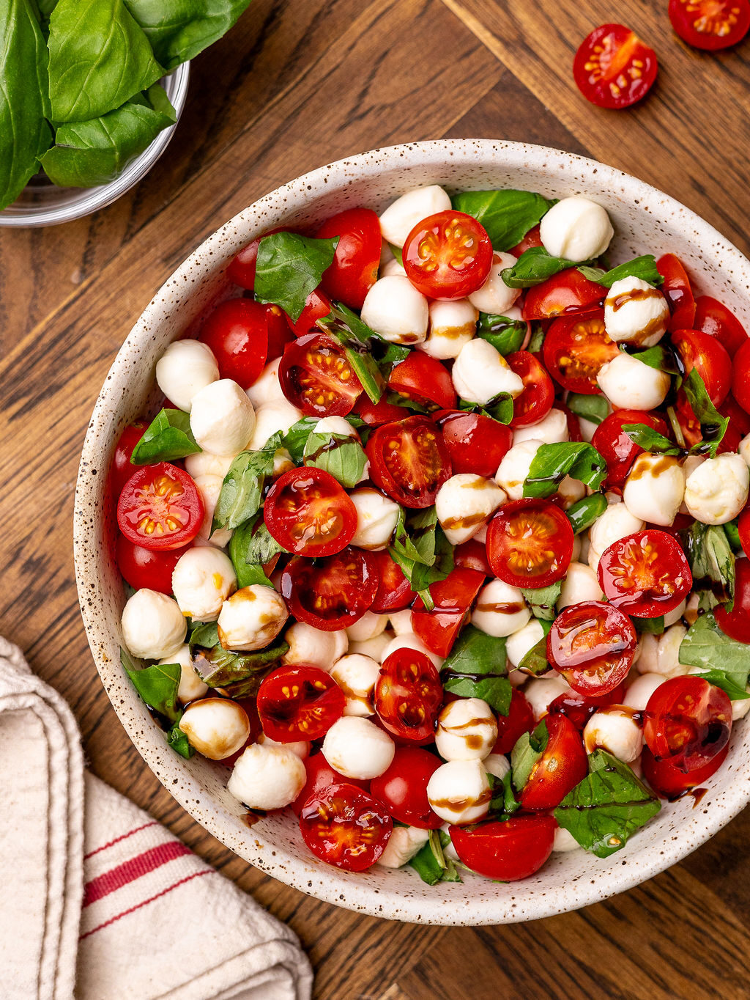

Home
Tossed Caprese Salad

This salad combines fresh mozzarella, ripe tomatoes, and aromatic basil, all topped with a sweet balsamic drizzle. A quick dish to pair with the Four Cheese Lasagna.
Ingredients
- 1 (28 ounce) can of diced tomatoes, drained
- 1 lb fresh Mozzarella cheese, sliced
- 4 cups chopped fresh baby spinach leaves, or baby arugula
- 1 1/2 teaspoons kosher salt
Steps
- In a large serving bowl, toss together diced tomatoes, cheese, spinach, salt, red onion, and basil.
- Pour vinaigrette over salad when ready to serve and toss.
- Top with chopped fresh basil before serving.